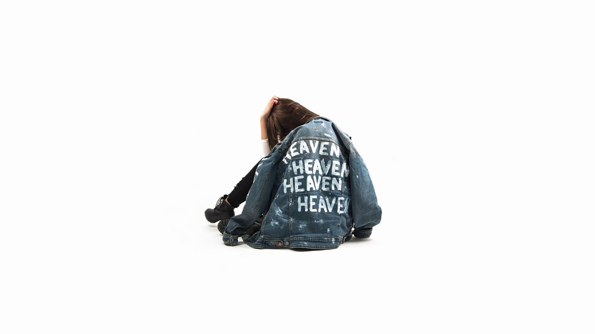

Here are some of my favorite songs right now
-
HEAVEN by Finneas
 -
STICKY by Tyler

I’m 23 years old, and I’ve dedicated myself to the path of medicine, knowing that every day I have the opportunity to make a difference in someone’s life. My love for God is the foundation that guides everything I do, reminding me of my purpose and the importance of serving others. Outside of my work, I find joy in the simple things—like the unconditional love of puppies,which always bring a smile to my face.
I’m also passionate about learning new skills, constantly growing and
evolving in all areas of my life. In addition to my professional pursuits,
I have a deep fascination with innovation.
I love exploring new ideas, technologies, and ways of thinking that push
the boundaries of what’s possible. Whether it’s in healthcare, science, or
beyond, I’m driven by the desire to contribute to groundbreaking
advancements.
Art also plays an important role in my life—it’s a source of creativity
and inspiration that keeps me grounded and sparks my imagination. The
combination of art, innovation, and my commitment to medicine shapes who I
am, guiding me to find new ways to blend compassion with progress.
Above all, I cherish my friends and family, whose support and love fuel my
journey. I strive to live each day with kindness, compassion, and a deep
desire to be the best version of myself.